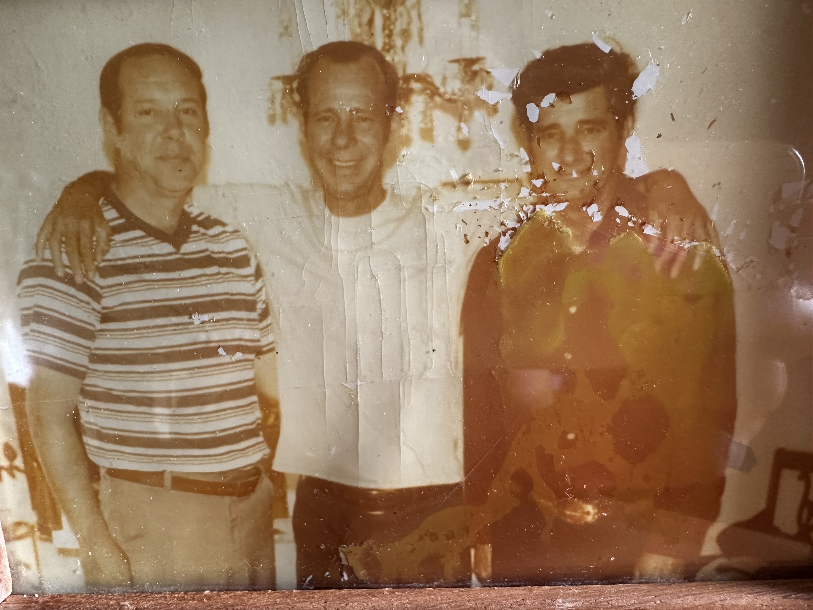
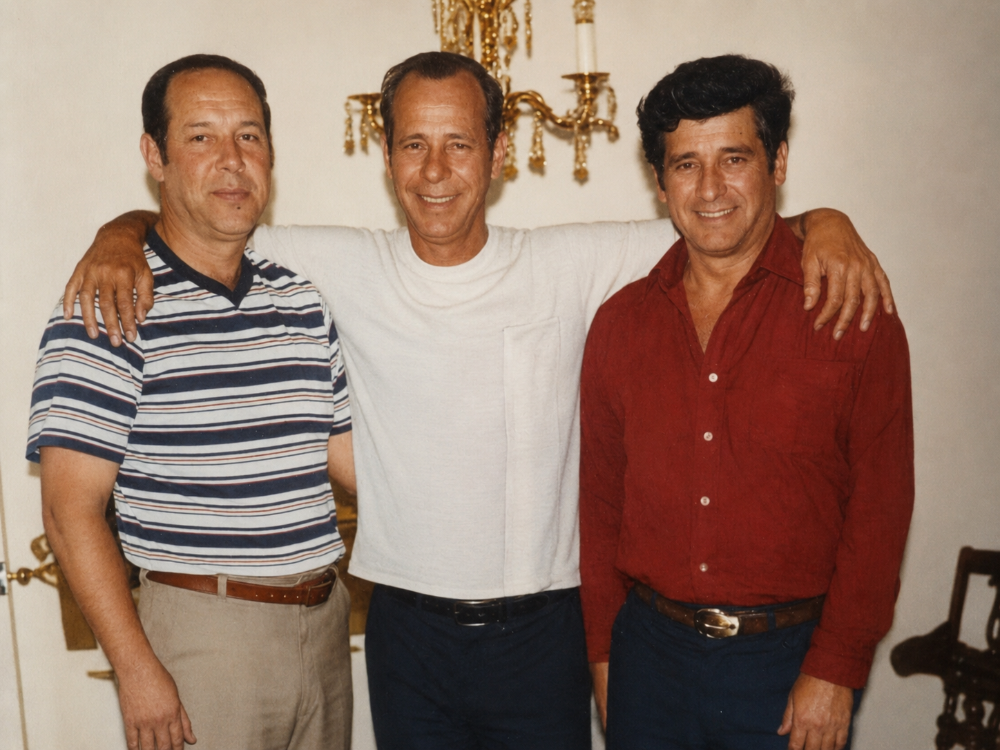
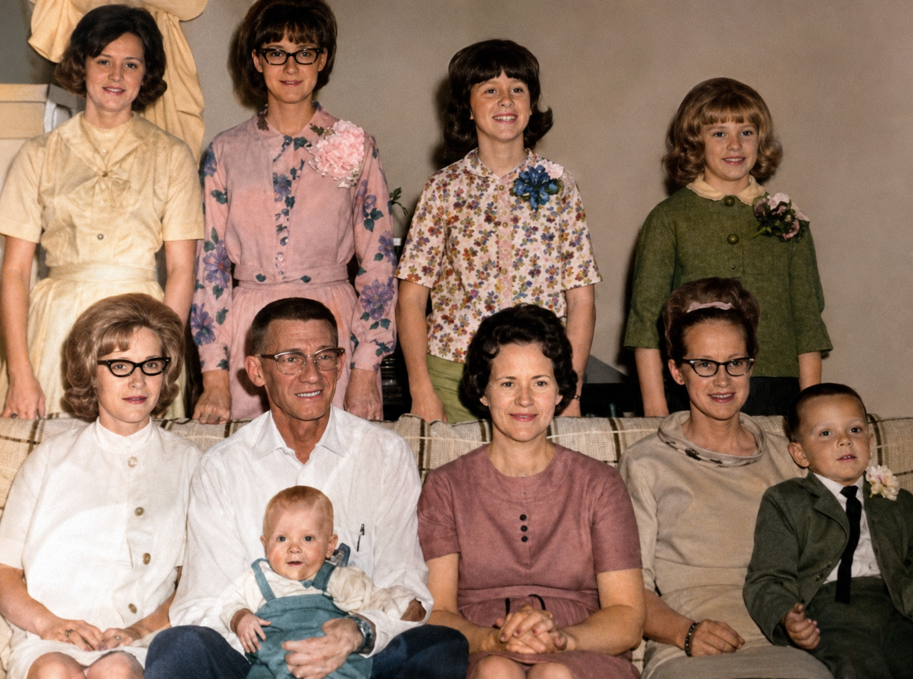
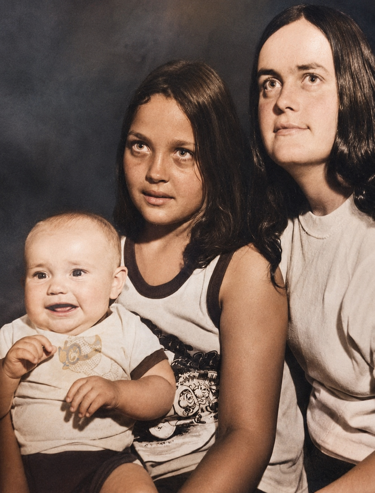
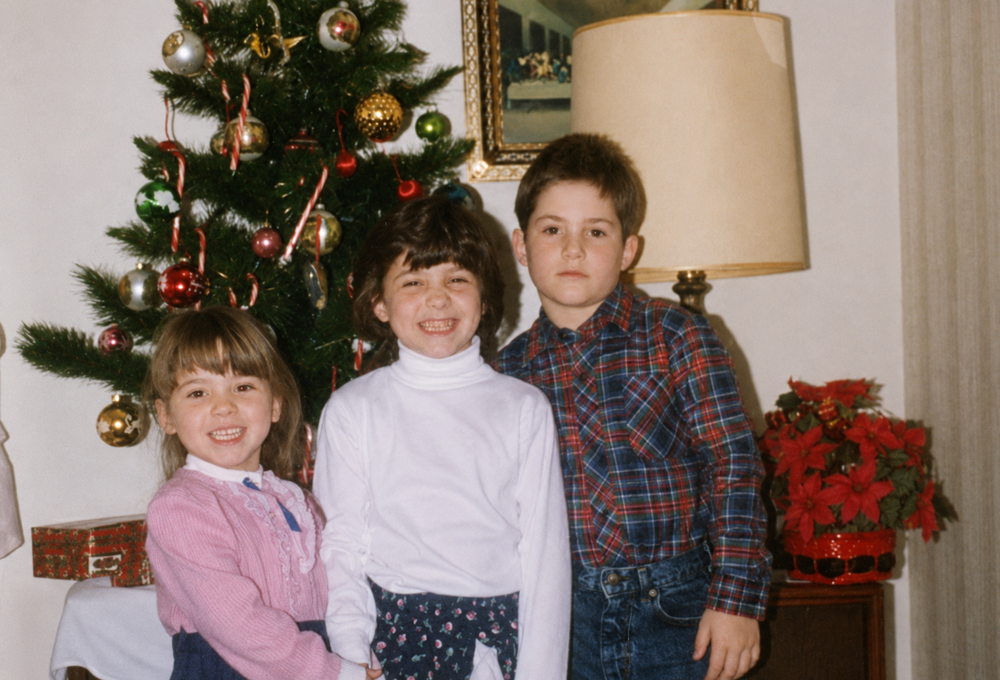
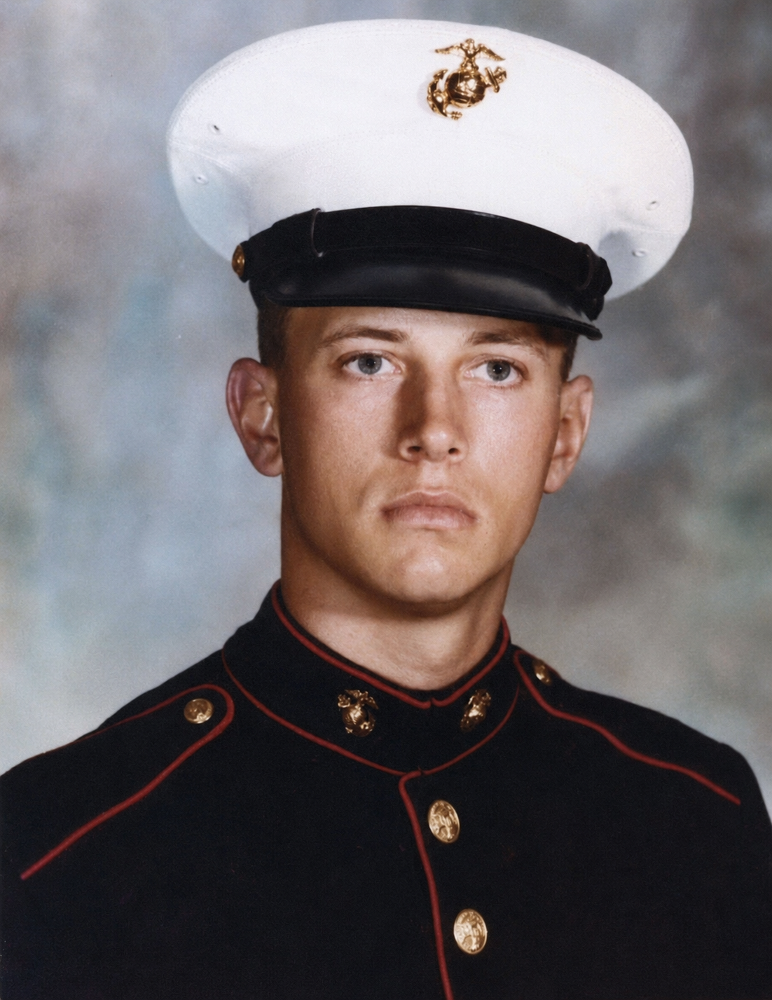

Photo Restoration
Repair torn, faded, stained, scratched, cracked, water damaged, and deteriorated photographs while preserving every meaningful detail.
WELCOME
Every photograph displayed throughout this gallery once belonged to someone who mattered deeply to their family. Whether tucked away in an old album, stored inside a keepsake box, or passed down through generations, every image tells a story worth preserving.
Our restoration process is guided by patience, craftsmanship, and respect. We carefully recover faded details, repair damage, and restore clarity while preserving the authentic appearance and character of every individual.
Beyond traditional restoration, we also create custom portrait designs by thoughtfully combining multiple photographs into elegant wedding invitations, memorial tributes, anniversary portraits, family legacy artwork, and other timeless keepsakes.
OUR PHILOSOPHY
Every photograph deserves thoughtful care. Before restoration begins, each image is carefully examined to understand its history, its damage, and the memories it represents.
Our goal is never to change the people within a photograph. Instead, we work to recover the beauty that time has hidden while remaining faithful to the original portrait.
Whether restoring a century old family heirloom or creating a brand new legacy portrait, every project is completed with honesty, precision, and exceptional attention to detail.

FEATURED RESTORATION
Every photograph entrusted to TruePortrait Revival represents a treasured memory. Our goal is to preserve each image while remaining faithful to the people and stories it represents.
Years of fading, scratches, stains, and physical damage had nearly hidden the beauty of this treasured family portrait. Although time had taken its toll, the memories contained within the photograph remained priceless.
Every damaged area was carefully repaired while preserving the original expressions, clothing, lighting, and character of the family. The result is a restored portrait that feels authentic and timeless.
Our restoration process is never about changing history. It is about allowing future generations to experience it with renewed clarity.

SIGNATURE RESTORATIONS
Every restoration begins with respect for the original photograph. Damage is carefully repaired while preserving every meaningful detail.
Sunlight, moisture, handling, and age can leave treasured photographs faded and damaged. Through careful restoration, facial features, clothing, lighting, and meaningful details are thoughtfully recovered while remaining faithful to the original portrait.


CUSTOM PORTRAIT DESIGN
Wedding invitations, memorial portraits, anniversary keepsakes, graduation announcements, and family legacy artwork can all begin with one or more treasured photographs.
Several photographs are provided as references. Every facial feature, pose, expression, and meaningful detail is carefully studied before creating the final design.
The finished portrait is transformed into a beautiful custom wedding invitation, memorial tribute, anniversary gift, graduation announcement, or timeless family keepsake while preserving the authentic appearance of every individual.
Design My Custom Portrait
GENERATIONS REUNITED
Some families never had the opportunity to stand together for a single photograph. A grandparent may have passed away before grandchildren were born, military service may have separated loved ones, or generations simply lived during different seasons of life.
Through thoughtful digital artistry, individual photographs can be respectfully combined into one timeless portrait while preserving the authentic appearance of every family member.
These custom legacy portraits become treasured heirlooms that celebrate family history and create something future generations can proudly display in their homes.
Create A Legacy PortraitOUR SERVICES
Whether restoring a single treasured photograph or creating a completely custom family portrait, every project receives the same exceptional attention to detail.
Repair torn, faded, stained, scratched, cracked, water damaged, and deteriorated photographs while preserving every meaningful detail.
Restore faded colors, improve lighting, sharpen detail, balance contrast, and present treasured photographs with renewed beauty and clarity.
Create elegant wedding invitations, memorial portraits, anniversary gifts, graduation announcements, and legacy artwork from multiple photographs.
OUR PROMISE
Every image entrusted to us receives the same commitment to quality, honesty, and craftsmanship.
Every photograph is individually examined to determine the most respectful restoration approach before editing begins.
We preserve facial expressions, personality, and meaningful details while carefully repairing damage caused by age and time.
Lighting, color, sharpness, texture, and balance are refined to produce a beautiful final portrait without sacrificing authenticity.
Every completed restoration is designed to become a treasured keepsake that families can preserve and proudly display for generations.
RESTORATION COLLECTIONS
Browse our growing collection of restored photographs celebrating families, childhood, military heritage, weddings, memorials, and timeless legacy portraits.

Treasured family photographs restored with exceptional care.

Preserving childhood milestones and treasured moments.

Honoring military service through respectful restoration.
Celebrating loved ones through beautifully restored portraits.

Preserving the beauty of wedding portraits for generations.

Celebrating the generations whose love shaped every family.

Preserving photographs that reflect faith, fellowship, and enduring spiritual legacy.

Custom heirloom portraits that thoughtfully reunite generations.

A PERSONAL INVITATION
Every photograph entrusted to TruePortrait Revival represents something deeply personal. It may be the only remaining portrait of a loved one, a faded family heirloom preserved for decades, or a photograph that tells the story of your family's journey.
These are not simply photographs. They are pieces of someone's history. That is why every restoration is completed with the same patience, care, and attention I would give my own family's treasured memories.
It is a privilege to preserve the people and moments that matter most, and I sincerely appreciate the opportunity to help protect those memories for future generations.
Founder
TruePortrait Revival
BEGIN YOUR STORY
Whether restoring a treasured family photograph, repairing severe damage, or creating a custom portrait from multiple images, we would be honored to help preserve your family's story with exceptional craftsmanship and care.